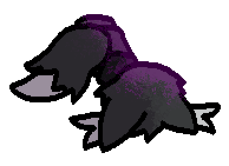

Clicker Information
This creature has been clicked 0 times.
Shake the ID or click this text to reset it.
Use the slider above to adjust Gray's volume.
Shaking the ID too much will cause the volume to slide.
Gray
They/Them
XX years old
Block 4
Block 5
Block 6
Pride flag code by VynxCodes on Toyhouse.
hey so like this website really doesnt work all that well on mobile sorgy :3
Gray's Corner
Hey there! Welcome to my little corner of the internet. I hope you enjoy your stay.
As you might've been able to discern from the website's title, I'm Gray. Another one of those weird furry things. I dabble in quite a few fields, such as various forms of artwork, music, and coding. I'm still a bit new to the whole "making a website" thing, with my only real experience so far being a project with a few friends, so please forgive me if anything doesn't work properly.
About Me
Expanding on some of the points made in the first box, I dabble in quite a few fields relating to the creation of various forms of art. I mostly work with creating 2D art, as it's the field I have the most experience (and actual motivation) with. Definitely not all that great at it, but we make do. I also do a bit of work in 3D rendering, though I'm working towards figuring out how to make my own (slightly higher-poly) models. I've got a bit of experience when it comes to making models in Blockbench however.
MUSIC. I love composing silly little songs when I have the motivation to do so (being once in a blue moon) and personally think I do best at like, some kinda dark spooky music and stuff. I've no idea how properly to describe the genre but I've got a few examples in my portfolio, such as "BLACK TIDE (SHIFTED MIX)", "LURE", and a few others.
I've got a bit of experience with a few kinds of programming. I've been working with HTML/CSS for since like... 2018-ish? I forget exactly when I started but I was really young when I began dabbling in web development. Nothing to the extent of a full-fledged good-looking website, that wouldn't be until November of '25 with a wiki for a Roblox game being worked on with a few friends (though "good-looking" may be a bit of a stretch, it's pretty barebones), and late December of the same year for this site.
I've got a bit more experience with Lua, though that's mostly been confined to making Friday Night Funkin' mods (specifically using Psych Engine v0.6.3), however I'm starting to expand into working with Haxe as well for FNF-related projects. Currently, Broken Memories is my largest foray into the world of Haxe. I also have... a little bit of experience with Roblox Lua... or something like that...
oh yeah also godot ive got some experience with that. nothing crazy but its noteworthy anyways.
Likes and Dislikes
Likes :3
In no particular order
- I like a wide variety of games, from first person shooters to sandbox games. Examples of some of my favorites being both Hollow Knights, ULTRAKILL, Minecraft, Vintage Story, various Roblox games, Celeste, a lot of Sonic games, FNAF, the list goes on. I've played many a game in my time.
- I don't watch much when it comes to television and stuff but I'm a pretty big fan of some of the stuff Marvel puts out (definitely more than some of the other stuff they put out). Not as big a fan of Disney itself though. Other than that I kinda just watch YouTube most of the time. Currently a good chunk of that is bodycam footage, art videos, and gaming videos.
- Pretty big fan of various forms of music. Alternative rock (and some other rock types), some kinds of pop, and probably some other genres I don't really properly know the names of. Currently in terms of actual artists I've been listening to a lot of Jamie Paige, FLAVOR FOLEY, Paramore, Muse, Sleep Token, and Churgney Gurgney (specifically Sinister Minds).
- Despite sitting at my desk all day on a computer I actually quite like nature. Big fan of birds. Birds are cool. I also like to just take pictures of landscapes and flora and stuff. Despite not being able to swim, I love aquatic life. Fish are pretty cool y'know? Cephalopods and medusozoans are also pretty cool. I'm not sure what it is about oceans but I'm fascinated with them. Just not fascinated with being in them. Also a fan of cats if it wasn't evident by the kinds of characters I create (they're basically all feline-adjacent).
- Food. I love food. Not to a point where it would be concerning (quite the opposite really, I'm pretty underweight as of the time of writing this) but enough for me to basically be snacking throughout the entire day. Various kinds of cereal, turkey burritos, pizza, burgers, various snack mixes, all that kinda stuff.
Dislikes :[
In no particular order
- Cucumbers.
- I dislike some pretty generic things. Xenophobes, people who are anti-LGBTQ (gee i wonder why), content made by problematic people or people who are generally just kinda messed up (things like Harry Potter, Forsaken, that kinda stuff), GenAI, uber-conservatives (the American ones, I don't have enough experience with any others).
Not a huge fan of people who don't respect boundaries either. -
I KNOW THIS IS PROBABLY SUPER CONTROVERSIAL BUT
im like super ████ing terrified of dogs like full-on panic attack if im too close to one for along period of timerant time
ok so like i was at disneyland with my mom this one time right
got on the lil fire engine to go for a ride
someone else got on and they had a dog
the dog was just laying on my foot the whole time
thought i was gonna have a heart attack ough  - Mexican food (specifically the greasy kind), and Asian food. Makes me feel kinda nauseous afterwards.
- Sudden loud noises or noises like mixers and blenders. Those kinda sounds cause my anxiety to start deciding it feels like being present at that moment. For sudden loud noises I can understand it but mixers and blenders are more confusing to me.
- Anything competitive. It's way too stressful for me.
Depending on when you're reading this and when I've last updated the site there's a chance some of this may be outdated.
Fun Facts!
- My memory isn't all that great. Definitely not horrible, but I do struggle a bit with short-term memory.
- My long-term memory on the other hand is pretty good. I can hold a grudge for a while. I will remember if you do something I find to be harmful towards me in some way, shape, or form.
- I've yet to break a bone. Thought I did back in elementary school but it was just a painful injury. There was that other time I ended up tripping and falling down a sloped pathway and received numerous scrapes and cuts but that actually didn't hurt all too much. Didn't even really realize I was injured until I got to school and noticed I was bleeding.
- I originally made a furry roblox avatar to scare kids on Roblox since many of then are vehemently anti-furry, then realized "oh hey i kinda like being a furry" and fully embraced it. Being so heavily involved with the EXE community probably also had a part in becoming a furry what with me adopting my EXE as a main sona for a while.